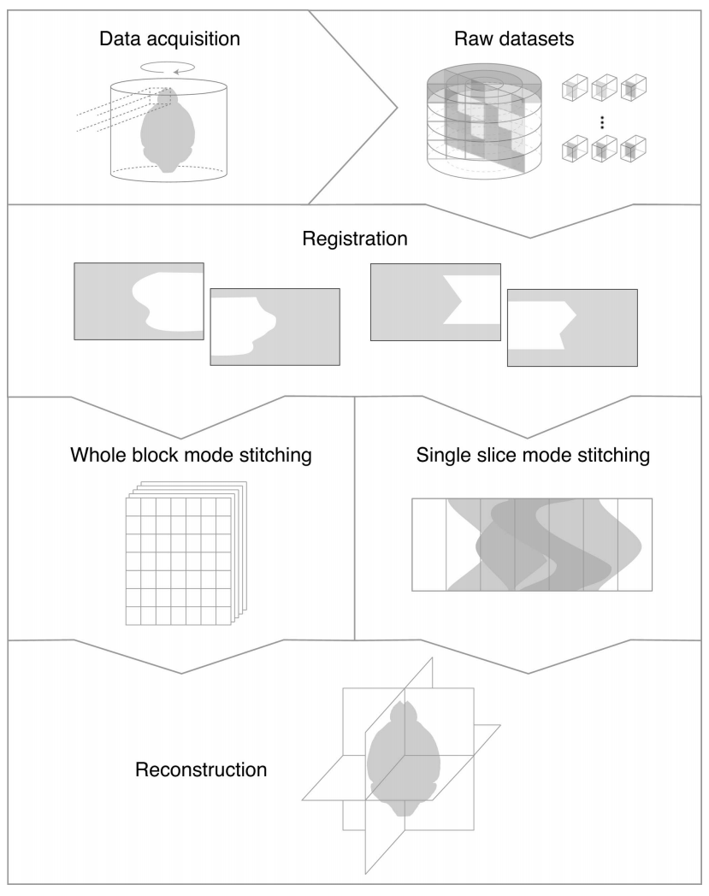

Demonstration¶
Starting processing¶
In the directory containing all collected HDF5 data files, run
automo_process_dir
You can use the --ini_file and --params_file flags to specify the location and filenames of the configuration
and parameter files. Otherwise, Automo will use the files in the macros folder of its source directory. After moving
each file to the proper folder, Automo does the following:
If the file is of type
tomo_180ortomo_360, Automo runs operation scripts according to the sequence and parameters specified in theiniandcsvfiles. After the operations finish, a bash script with executed commands will be created in the folder.If the file is of type
tomosaic, Automo will not execute the commands, but will create a bash scripts of commands for the user to execute manually in bash.
If the directory has already been organized either by hand or by the beamline control software, the automo_process_dir
can be skipped, and you may want to just generate the bash commands used to run processing operations. For this, type
automo_create_commands --type <tomo_180, tomo_360, or tomosaic>
This tells Automo to generate a bash script file at the current folder, with the operations and parameters provided in the specified (or default) configuration file and parameter file.
Tomosaic workflow¶
This section talks about the workflow of Tomosaic-type data processing using Automo. Tomosaic allows mosaic tomography reconstruction to be performed either after merging all HDF5 files into a single file with stiching and blending in both x- and y-direction (whole-block mode, WBM), or directly by stitching sinograms in the x-direction (single-slice mode, SSM). While image blending and sub-pixel shifting is currently only supported in WBM, SSM provides a light-weight reconstruction option which demands less memory and hard drive space. The major workflow is summarized in Fig. 2 of the Tomosaic paper.
{kind=link}
The general procedure of Tomosaic processing using Automo is described below. Again, you can utilize automo_create_commands
to generate the bash commands with a series of operations.
In the folder containing the data files of all scanned tiles, run
automo_tomosaic_creates_metawith position offset in x and y specified using the--x_shiftand--y_shiftflags. This creates a file calledmosaic_meta.pyin the current directory.Run
automo_tomosaic_reorg --ds 1. This creates a folder calleddata_raw_1xand moves all HDF5 files in it. If you want downsampled copies of the data files, modify the –ds flag, with different downsampling levels separated by commas (,). For example,--ds 1,2,4. Files downsampled for 2 times will be saved in folderdata_raw_2x, and same pattern for the rest.Run
automo_tomosaic_preview --frame 0 --pano autoto create separate projections and flat fields at 0 degree, as well as stitched panoramas at 0 and 180 degrees.(Optional) Run
automo_tomosaic_registerto realign the tiles. This creates a file calledshifts.txtwith each line of it following the format oftile_index_y tile_index_x y_shift_to_right_tile x_shift_to_right_tile y_shift_to_bottom_tile x_shift_to_bottom_tile
If this step is skipped (and thus
shifts.txtdoesn’t exist), Automo will use the shift values provided in themosaic_meta.pyfor subsequent procesures.Run
automo_tomosaic_center --center_st auto --center_end auto --row_st 0 --row_end auto --mode discrete. Automo try to find the rotation centers for specified rows of tiles. If--center_stor--center_endis set toauto, Automo will guess the range for center search using phase correlation. If--methodis set topc, then the phase correlation results will be final. Otherwise, the range for center searching usingmanual,entropy, orvowill be set to be +/-5 of the phase correlation guess. Formanualandentropy, trial reconstructions will be saved ascenter/<row_number>/<center_value>.tiff.If
--methodis anything other thanmanual, or if phase correlation is used to provide the initial guess, then Automo will create a file namedcenter_pos.txtat the current directory, with each line indicating the row number and the center position at that row. Otherwise, you need to manually create this file in order to the reconstruction script to read.Since setting
--methodtomanualorentropylets Aumoto create reconstructions, it is also a way to generate reconstruction previews.(Only needed for WBM) Run
automo_tomosaic_mergeto fuse the HDF5 files into a single one. The default name and location of the created file isfulldata_flatcorr_1x/fulldata_flatcorr_1x.h5.Run
automo_tomosaic_reconfor final reconstruction. Make sure the--modeflag is set correctly: usemergedfor WBM, anddiscretefor SSM. SSM is recommended if there is only one row of tiles.
By using automo_create_commands --type tomosaic, a bash script following the above procedureS (assuming WBM)
can be generated:
automo_tomosaic_create_meta --x_shift 1000 --y_shift 1000
automo_tomosaic_reorg --ds 1
automo_tomosaic_preview --frame 0 --pano auto
automo_tomosaic_register
automo_tomosaic_center --center_st auto --center_end auto --row_st 0 --row_end 1 --mode discrete --method manual
automo_tomosaic_merge
automo_tomosaic_recon --mode merged --chunk_size 5
Correspondingly, automo.ini should contain the following in the robos section:
tomosaic = automo_tomosaic_create_meta, automo_tomosaic_reorg, automo_tomosaic_preview, automo_tomosaic_register, automo_tomosaic_center, automo_tomosaic_merge, automo_tomosaic_recon
automo_params.csv should have the following settings:
automo_tomosaic_reorg; ds; 1
automo_tomosaic_create_meta; x_shift; 1000; y_shift; 1000
automo_tomosaic_preview; frame; 0; pano; auto
automo_tomosaic_register
automo_tomosaic_merge
automo_tomosaic_center; center_st; auto; center_end; auto; row_st; 0; row_end; 1; mode; discrete
automo_tomosaic_recon; mode; merged; chunk_size; 5